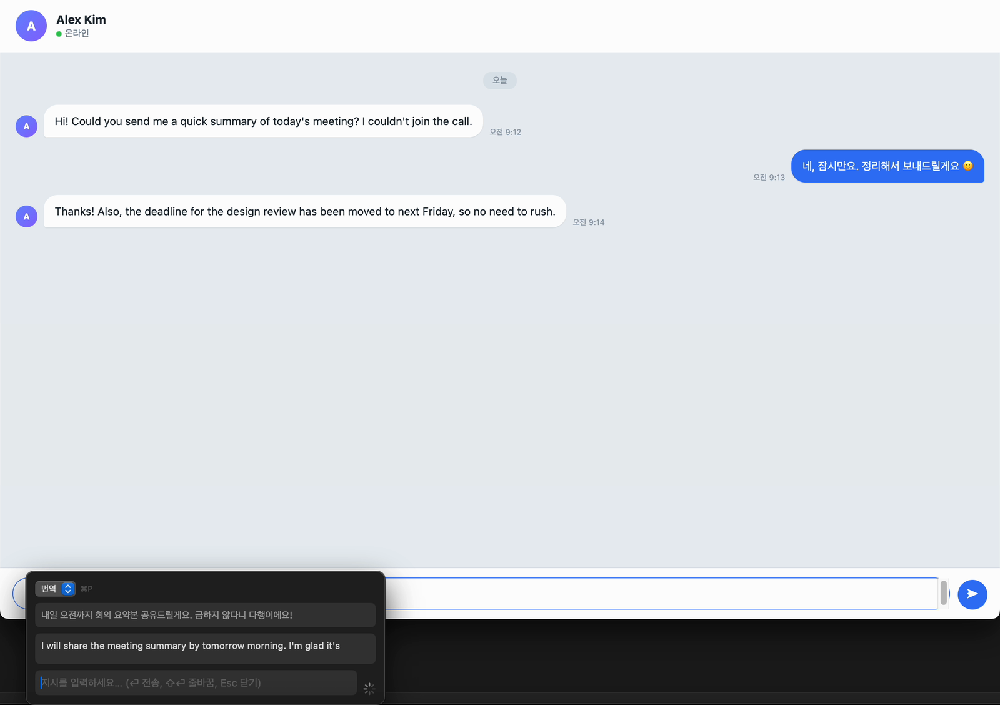
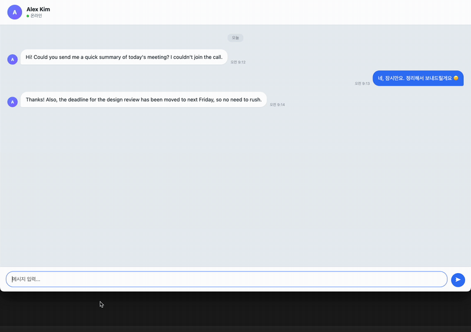
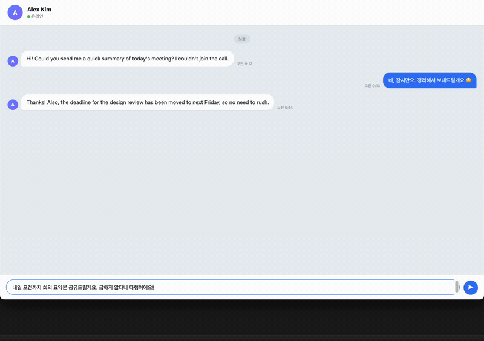
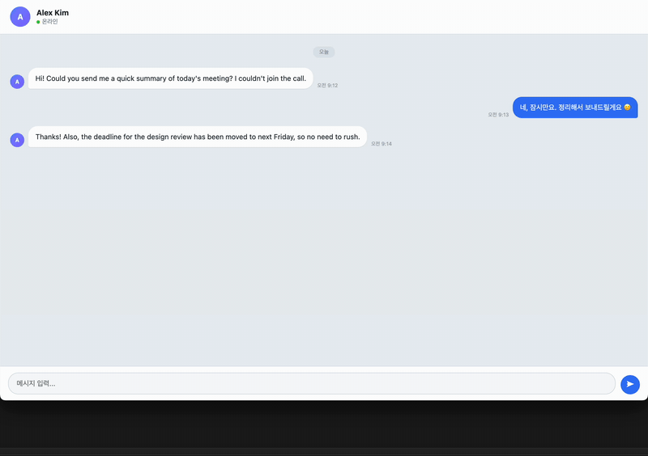
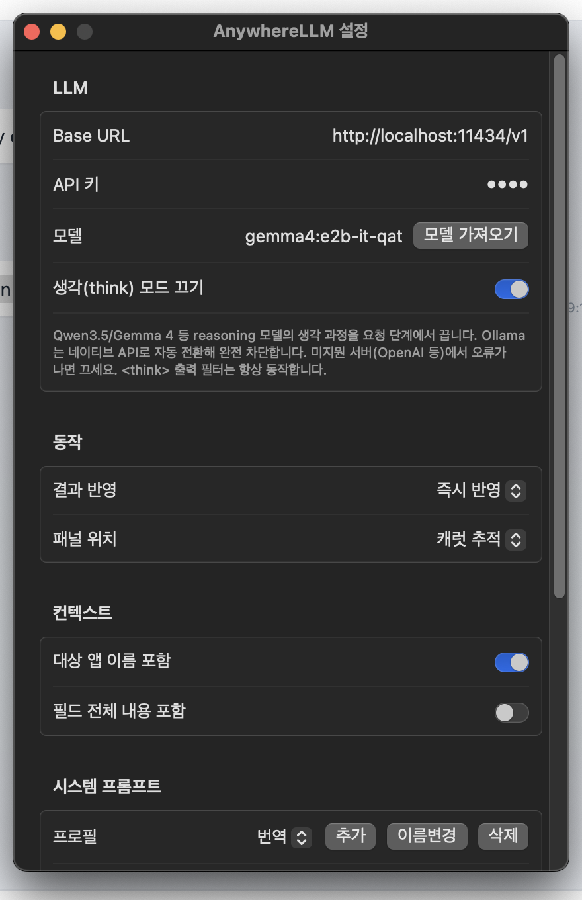

LLM at your cursor — in any app.
One global hotkey ⌘⇧Space opens a panel that never steals focus. Responses type live into the focused text field, or replace the selected text in place — no window switching, no copy-paste round trips.
brew install --cask scian0204/tap/anywherellmSelf-signed without Apple notarization — the quarantine attribute is removed automatically during install.
Windows — get the installer (.msi) from Releases · hotkey Ctrl+Shift+Space

Put the cursor in an empty text field and type a request in the panel. The response streams into the target app as it arrives, typed character by character.

Invoke with text selected: review the original and the result in the panel, and the selection is replaced when done. Refine over multiple turns before applying.

Select text with nowhere to insert into — a received message, a web article, a PDF — and the result is shown and kept in the panel instead.

Built on a non-activating NSPanel: the target app stays frontmost — focus, cursor, and selection intact — even while you type in the panel.
⌘⇧Space by default, configurable in settings. Press again mid-stream to cancel.
Editability and selection are detected via the Accessibility API to pick insert, replace, or view-only — no mode switch to think about.
Writes use AX insertion or synthesized Unicode key events — your copy buffer is never dirtied.
Chat completions with SSE streaming. Works with local servers too: Ollama, LM Studio, vLLM.
Reasoning models' <think> output is disabled at request time and filtered once more on the way out.
Save per-purpose system prompts — translate, summarize, proofread — and switch instantly with ⌘P inside the panel.
Password fields are fully blocked — capture, insertion, clipboard fallback — and this cannot be disabled. API keys live in the macOS Keychain.
AppKit + SwiftUI only. No external packages, nothing phoning home.
